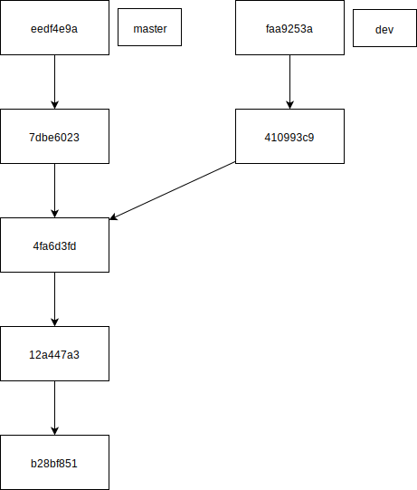

Préface
Ce document est inspiré du livre « Pro Git », 2e édition, écrit par Scott Chacon et Ben Straub, publié chez Apress (2014). Plusieurs des paragraphes sont copiés de la traduction française de cet ouvrage.
Avant de commencer
Qu'est-ce que gestion de version ?
Un système de gestion de version enretistre l'évolution d'un fichier au cours du temps. C'est-à-dire qu'il ne se contente pas de sauvegarder les fichiers d'un projet, il garde également toutes les anciennes versions de chacun de ses fichiers.
Avant cette technologie, il était nécessaire d'enregistrer séparément chaque version, de garder dans un dossier « archives » toutes les versions précédentes et surtout, de faire attention à ne pas écraser le mauvais fichier !
Que permet un gestionnaire de version ?
Dire qu'un VCS sert à garder les anciennes versions d'un projet ne serait qu'observer de loin un drapeau planté au sommet d'un iceberg. Les capacités de Git et de ses semblables sont bien plus étendues que ça et nous le verrons dans ce document. Les outils fournis par Git permettent par exemple de :
- Garder chaque version d'un logiciel, d'un document ou d'autres types de données.
- Travailler de manière collaborative sur le même fichier au même moment.
- Gérer automatiquement ou manuellement les conflits inhérents aux projets de groupe.
- Savoir qui a écrit une ligne donnée.
- Créer plusieurs versions du même projet et les maintenir de manière simultanée.
- Isoler une erreur introduite dans une version récente sans avoir à chercher dans les fichiers.
- …
Git, ça n'est pas un logiciel, c'est en fait un regroupement de presque 150 micro-logiciels, regroupés sous un seul nom. (Certains de ces logiciels ne sont que des raccourcis vers une séquence d'autres, mais il faut voir Git comme un couteau suisse, analogie d'ailleurs déjà reprise par ce site).
Types de VCS
Il existe deux types de gestionnaires de versions : les centralisés et les distribués. Voici leurs différences :
VCS centralisé
Dans l'historique des systèmes de gestion de version, CVS et SVN (les « ancêtres » de Git) étaient centralisés. C'est-à-dire que leurs données se trouvaient sur un serveur et que des clients pouvaient aller y piocher une version définie. Le serveur s'occupait de gérer tous les conflits et les différentes versions.
VCS distribué
Les systèmes de gestion de version plus récent, tels que Git ou Mercurial, sont distribués. C'est-à-dire que l'historique des versions et toutes les données inhérentes au projet se trouvent sur la machine de travail. Lorsqu'il y a synchronisation, tout l'historique est transféré dans un sens ou dans l'autre.
Avantages et inconvénients
| Type de VCS | Avantage | Inconvénient |
|---|---|---|
| Centralisé | Peu de place sur le poste de travail | Nécessite une connexion pour la synchronisation |
| Distribué | Redondant, perte de données pratiquement impossible | Génère un historique tentaculaire, difficile à maintenir |
Installation
L'installation de Git est très simple pour les trois plateformes principales.
Sous Linux
Git se trouve dans la majorité des gestionnaires de paquets et est installé de base sur bon nombre de distributions. C'est normal, les concepteurs de Git sont les mêmes que ceux de Linux et ce système d'exploitation est lui-même versionné grâce à Git.
Il est recommandé d'installer Git (outil en ligne de commandes), Git GUI (interface graphique) et gitk (visualisateur d'historique). Optionnellement, un comparateur peut être installé. Le comparateur est utile pour la gestion de conflits, mais ne nous perdons pas dans ces préoccupations pour l'instant.
L'installation se fait en ligne de commande grâce à votre outil favori :
- Debian/Ubuntu :
# apt install git git-gui gitk - RedHat/Fedora :
# dnf install git git-gui gitk - …
Sous Windows
L'installation se fait grâce à un installeur situé sur la page de téléchargement du site officiel. L'installation par défaut offre toutes les fonctionnalités nécessaire à l'utilisation de Git.
Sous Mac
Comme pour Windows
Concepts
Commit
Un commit (aucune traduction française correspondante) peut être symbolisé par un piton pour un alpiniste. Lors de son escalade, il place des points d'ancrage dans la paroi rocheuse, afin d'éviter de retomber jusqu'au sol s'il déroche. De manière similaire, chaque commit effectué enregistre l'état du répertoire de travail.
L'alpiniste utilise ce procédé pour assurer sa survie personnelle. Le programmeur, quant à lui, l'utilise pour avoir accès à chaque étape de son code. En effet, git sauvegarde des « clichés » de chaque version et permet à l'utilisateur d'accéder de manière arbitraire à n'importe quel commit.
Dans git, les commit sont représentés par le hash sha-1 du dépôt, codé sur 160 bits. Cela représente un chiffre hexadécimal de 40 signes de long. Un commit donné peut être identifié par le début de son ID, si celui-ci permet de l'identifier. Ainsi, s'il existe un seul commit dans le dépôt dont l'ID commence par un 7, ce chiffre suffit à l'identifier. Dès qu'un deuxième arrive, il faut ajouter des signes jusqu'à ce qu'il soit possible de les différencier.
Exemple :
d8d1d7bdc9fc3e11d9098060c9a4994473dd31b0 -> identifié par d
eae30b18b0d925998a23b4b71bf66ffd41cbd7d8 -> identifié par ea
eb1fb877468c716f12eb141a5b580e2b4fcc7427 -> identifié par eb1
ebd5e8636854e3cd6d8669a2cb27b39c36c6da95 -> identifié par ebd
Pour des raisons pratiques, on identifie souvent les commit par 4 à 8 signes. Il est rare que plus de précision soit nécessaire, car les chances d'avoir deux commit qui commencent par la même suite de 8 signes dans un projet qui contient 1000 commit est de l'ordre de 10-8.
Branche
Les branches peuvent être représentées comme une marque sur un commit (dans la , les commits marqués « master » et « dev »). De ces commit, on peut retrouver en suivant les flèches tous les commits ancêtres, faisant donc partie de la même branche. Les trois plus anciens du diagramme font partie à la fois des deux branches.
{kind=link}
Fonctionnalités de base
Nous l'avons déjà vu, Git est un outil très puissant. En tant qu'utilisateur occasionnel, il est souvent fréquent de n'utiliser qu'une infime partie de Git. Voici ces parties indispensables.
Créer un dépôt
Un dépôt est un répertoire contenant l'intégralité du projet Git : les sources actuelles et passées, l'arborescence d'édition, les noms des branches et des étiquettes, etc. Pour créer un dépôt, une seule commande est nécessaire : git init. Lorsqu'un dépôt est créé, le répertoire courant et tous les sous-répertoires en font partie. Tous les fichiers se trouvant là seront potentiellement versionnés.
Fichiers non-versionnés
Il est préférable de ne pas versionner tous les fichiers. En règle général, les fichiers à ignorer sont :
- Les fichiers uniquement utiles à un IDE
- Les fichiers générés automatiquement qui peuvent être regénérés
- Les fichiers et exécutables compilés d'après les sources
- Les fichiers provenant de tiers (bibliothèques, plugins, bundles, etc.)
- Tout autre fichier qui peut être retrouvé ou recréé d'une autre manière
Afin d'éviter que ces fichiers ne soient versionnés, il suffit d'ajouter leur nom dans un fichier placé à la racine du dépôt appelé .gitignore. Comme son nom l'indique, ce fichier contient une liste de tous les fichiers censés être ignorés par Git.
Le site GitHub (qui propose entre autres un hébergement de dépôts Git gratuit, nous en reparlerons), possède un dépôt qui regroupe tous les principaux fichiers gitignore. Avant le développement d'une application, téléchargez toujours le fichier correspondant à votre langage sur https://github.com/github/gitignore.
Une fois téléchargé, le fichier doit être renommé en .gitignore. Par exemple, un développeur C++, devra télécharger C++.gitignore sur le dépôt GitHub et le renommer en .gitignore.
ren. Exemple, pour le même programmeur C++ : ren C++.gitignore .gitignore.
États des fichiers
Lors d'une utilisation normal de Git, les fichiers se trouvent dans plusieurs états successifs présentés ci-dessous ().

Un fichier non-versionné peut le devenir lorsqu'il est indexé puis versionné.
Un fichier modifié peut être mis à jour exactement de la même façon.
Une synchronisation est possible dans les deux sens lorsqu'on dispose d'un dépôt local et d'un dépôt distant (serveur).
Commandes utiles
La liste des commandes ci-dessous est vitale car ce sont les commandes qui sont utilisées en permanence.
| Commande | Explication |
|---|---|
git status |
Affiche le statut actuel du dépôt Git. |
git add un-fichier.txt |
Ajoute « un-fichier.txt » aux fichiers indexés. |
git add -A |
Ajoute tous les fichiers non-versionnés et modifiés aux fichiers indexés. |
git commit |
Versionne tous les fichiers indexés après avoir demandé un message de description. |
git commit -m "un message" |
Versionne tous les fichiers indexés avec le message donné. |
git push |
Envoie la liste des versions sur le serveur (s'il est défini). |
git pull |
Récupère la liste des versions depuis le serveur (s'il est défini). |
gitk |
Lance le visualiseur d'historique de versions. |
git checkout 71eb7 |
Récupère la version dont le code commence par 71eb7 (codes visibles par gitk). |
git status
Cette commande affiche des informations sur l'état actuel du dépôt. Exemple :
Sur la branche master
Modifications qui ne seront pas validées :
(utilisez "git add ..." pour mettre à jour ce qui sera validé)
(utilisez "git checkout -- ..." pour annuler les modifications dans la copie de travail)
modifié : index.html
Fichiers non suivis:
(utilisez "git add ..." pour inclure dans ce qui sera validé)
js/toc.js
js/fig.js
aucune modification n'a été ajoutée à la validation (utilisez "git add" ou "git commit -a")
git add
Cette commande requiert une liste des fichiers à versionner. La liste doit être passée à la commande directement. Il peut également s'agir de wildcards. Exemple : git add fichier1.txt dossier/fichier2.txt *.html.
Il est également possible d'ajouter tous les fichiers d'un seul coup, avec la commande git add -A ou git add --all.
Tous les fichiers indexés par cette commande depuis le dernier commit seront inclus dans le prochain.
git commit
Cette commande est le cœur de git. Une fois qu'au moins un fichier est indexé, il est possible de commiter. Le commit sauve l'état actuel du travail et le lie au précédent commit. Il sera ainsi toujours possible de revenir à une version précédente depuis une version donnée.
Un message de commit est obligatoire. En utilisant la commande git commit, l'éditeur configuré dans les préférences git est lancé et un message est demandé.
En utilisant l'option -m, le message peut être précisé directement dans la commande. Par exemple : git commit -m "Ajout des styles CSS propres aux images".
git push
Git peut s'utiliser en local, mais il y a également la possibilité de synchroniser son travail avec un serveur. Pour cela, il faut premièrement configurer l'adresse du serveur dans le dépôt git local (voir le chapitre consacré).
Une fois que le serveur est configuré, l'appel à git push transférera l'état du dépôt local sur le serveur.
git pull
De manière analogue, effectuer un git pull ira rechercher sur le serveur les commits qui auraient été effectués par d'autres utilisateurs ou depuis un autre poste de travail et les ajoutera à l'arborescence des commits en local.
gitk
Le logiciel gitk est un visualiseur d'arborescence. Il permet de voir d'un seul coup d'œil tous les commits, leur message et leur date. Il offre également quelques fonctionalités telles que la récupération d'une ancienne version ou la création d'étiquettes.
git checkout
Cette commande permet de se positionner ailleurs dans l'historique des commit. C'est la commande qui permet de récupérer les fichiers tels qu'ils étaient à un moment donné.
Il est possible, par exemple, d'utiliser la commande git checkout 83d74 qui chargerait le commit dont l'identifiant unique commence par 83d74. Il est également possible de donner le nom d'une branche ou d'une étiquette : git checkout master ou git checkout v0.1-alpha.